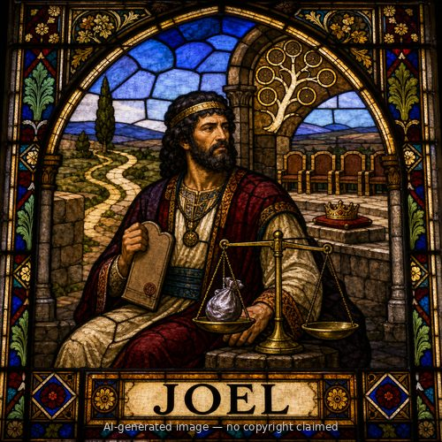
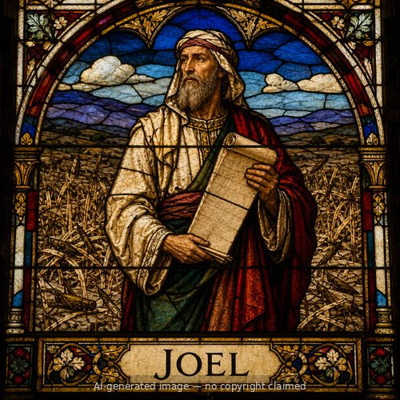

Joel (M)
First named in 1 Chronicles 15:7-11
Joel was a chief among the Gershonite Levites during King David's reign. When David resolved to bring the ark of the covenant to Jerusalem -- determined this time to do it God's way after the earlier, disastrous attempt that cost Uzzah his life (1 Chronicles 13; 15:1-2) -- he summoned the heads of the Levitical families, including Joel, and charged them: "You are the heads of the fathers' households of the Levites; consecrate yourselves, both you and your relatives, that you may bring up the ark of the LORD God of Israel to the place that I have prepared for it" (15:12). Joel, identified as chief of the Gershonites with 130 relatives under him, was one of those summoned by name along with Zadok and Abiathar the priests and the other Levite chiefs to see that the ark was carried by Levites on their shoulders with poles, exactly as the Law commanded, rather than on a cart as before (15:7-15). Joel later appears again among the sons of Ladan the Gershonite (23:8), and, together with his brother Zetham, was entrusted with charge of the treasuries of the house of the LORD -- the sacred gifts and dedicated wealth stored for the temple's future construction and service (26:20-22). Joel's account, spread across three brief mentions, is a portrait of sustained, unglamorous faithfulness: consecrated service in a pivotal act of worship, then decades of trusted stewardship over what belonged to God.
Thought for Today
Joel helped carry the ark the way God commanded, after an earlier attempt had ended in disaster. Jesus is the only right way to approach God.
References: 1 Chronicles 15:7-11; 1 Chronicles 23:8; 1 Chronicles 26:22
Genealogy
Connections
Other people named Joel

